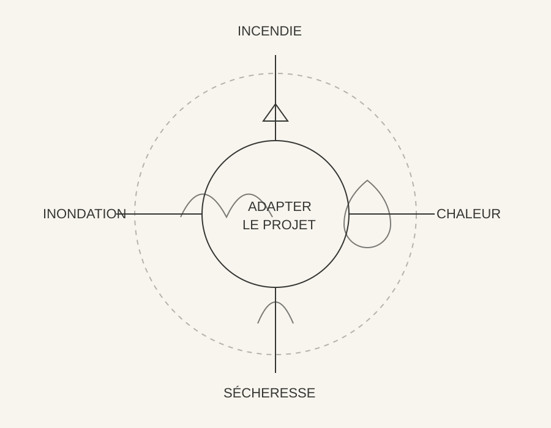

Incendies
Interfaces végétation / bâtiments · matériaux · accès secours · zones tampons · paysage protecteur
Résilience climatique
SC DESIGN FRANCE aborde la résilience comme un projet d’architecture et de territoire : comprendre les risques, réduire les vulnérabilités et transformer les contraintes en nouvelles qualités d’usage.

Interfaces végétation / bâtiments · matériaux · accès secours · zones tampons · paysage protecteur
Sols perméables · noues · stockage · cheminements · implantation · adaptation du bâti
Économie d’eau · végétation adaptée · sol vivant · ombrage · réemploi de l’eau
Ombre · ventilation · inertie · végétation · confort d’été · usage des espaces extérieurs
Submersion · érosion · réversibilité · mobilité · adaptation des usages · temporalité
Positionnement
SC DESIGN ne remplace pas les hydrologues, climatologues, écologues ou bureaux d’études spécialisés.
Notre rôle est de rassembler leurs données et contraintes, de les hiérarchiser avec les usages, l’économie et l’architecture, puis de les transformer en stratégie spatiale et opérationnelle cohérente.
Première étape
Présentez-nous votre territoire, votre bâtiment ou votre problématique.